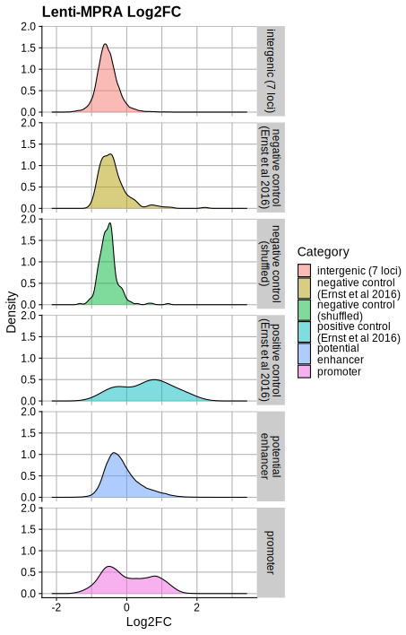
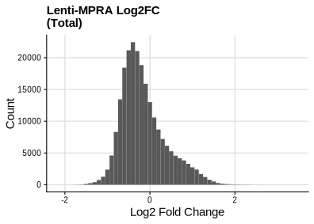
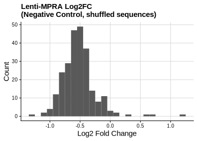
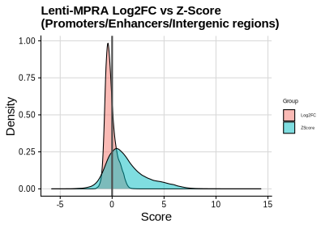

| File Name | Group | Sample |
|---|---|---|
| WSTARRseq_K562_A001.hg38.Input.rep1.WGS.unstranded.bed.gz | Input | Input.rep1 |
| WSTARRseq_K562_A001.hg38.Input.rep2.WGS.unstranded.bed.gz | Input | Input.rep2 |
| WSTARRseq_K562_A001.hg38.Input.rep3.WGS.unstranded.bed.gz | Input | Input.rep3 |
| WSTARRseq_K562_A001.hg38.Input.rep4.WGS.unstranded.bed.gz | Input | Input.rep4 |
| WSTARRseq_K562_A001.hg38.Output.rep1.WGS.unstranded.bed.gz | Output | Output.rep1 |
| WSTARRseq_K562_A001.hg38.Output.rep2.WGS.unstranded.bed.gz | Output | Output.rep2 |
| WSTARRseq_K562_A001.hg38.Output.rep3.WGS.unstranded.bed.gz | Output | Output.rep3 |
FCC Data
WHG-STARR-seq (WSTARR)
ATAC-STARR-seq (ASTARR)
Tiling MPRA (TMPRA)
| Chrom | ChromStart | ChromEnd | Region | Dataset |
|---|---|---|---|---|
| chr11 | 4505501 | 6505900 | HBE1 | OL45 |
| chr11 | 32869701 | 34870100 | LMO2 | OL45 |
| chr11 | 61787329 | 61898348 | FADS | OL13 |
| chr16 | 10001 | 1173100 | HBA2 | OL45 |
| chr2 | 59553301 | 61553700 | BCL11A | OL45 |
| chr20 | 56391301 | 58391700 | RBM38 | OL45 |
| chr8 | 126735901 | 128736550 | MYC | OL43 |
| chrX | 47785501 | 49880650 | GATA1 | OL43 |
Lenti-MPRA (LMPRA)



